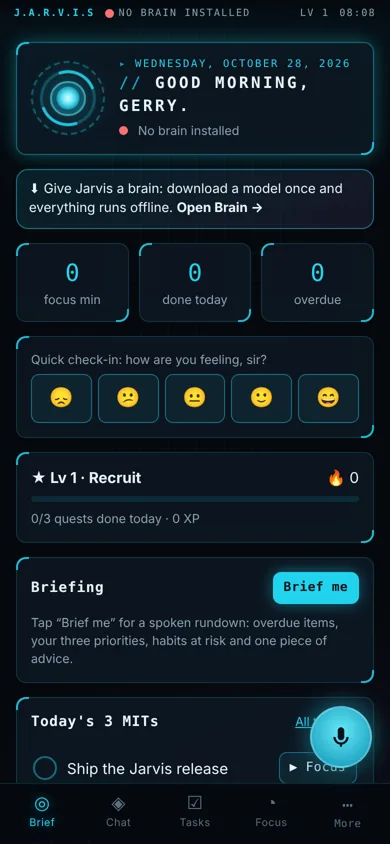
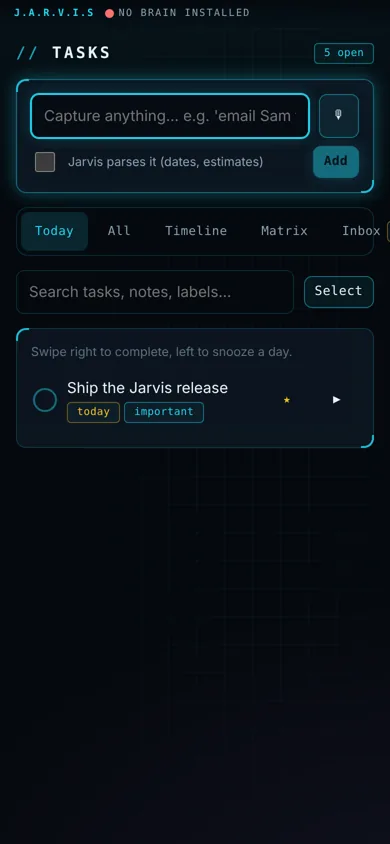
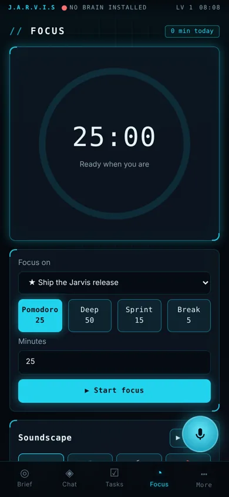
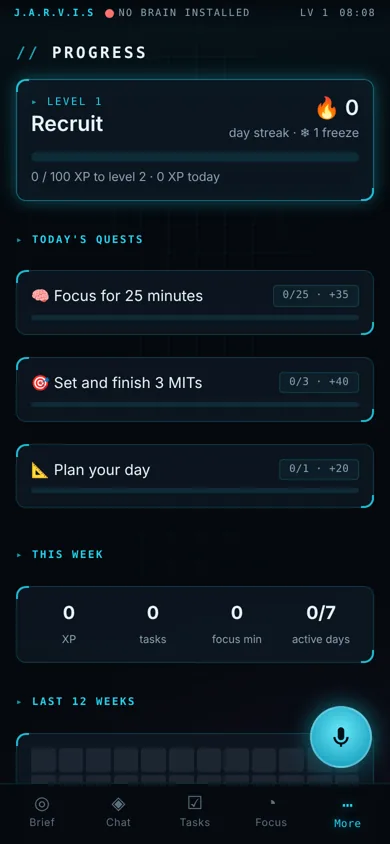
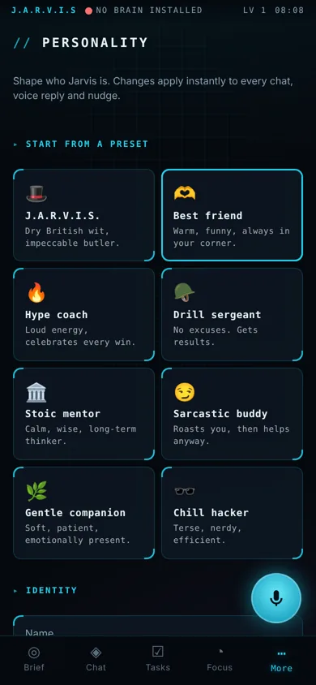
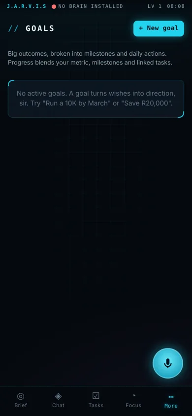
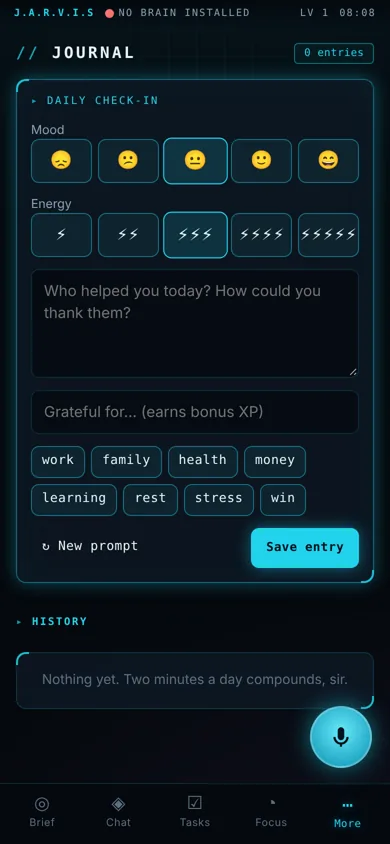
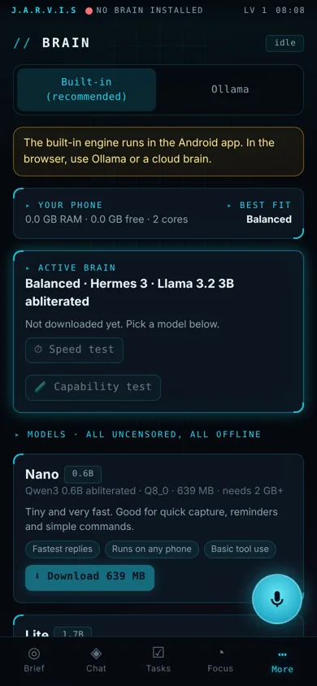

A productivity assistant with its own on-device brain: no cloud, no subscription, no data leaving your phone. It remembers what matters, keeps you focused, and talks like the friend you design.
llama.cpp runs a model on your phone. Pick from five sizes, 0.6B to 8B, all uncensored and tool-capable. No Termux or Ollama needed.
Semantic memory with on-device embeddings. It recalls the people, projects and preferences you've told it about.
Talk hands-free, say "Hey Jarvis" while the app is open, and choose any installed voice.
Presets plus twelve trait sliders: warmth, humor, sarcasm, candor, tough love and more. Or just say "be funnier".
MITs, Eisenhower matrix, timeline, recurring tasks, subtasks, labels, swipe gestures and reusable templates.
Pomodoro and deep-work blocks with offline rain, ocean, fire, brown noise and a 10 Hz focus tone.
XP, daily quests, achievements, streak freezes and weekly reports. Rewarding, never nagging, and optional.
Mood and energy tracking with pattern spotting, gratitude and AI reflection.
Import notes, manuals and PDFs; ask questions with cited answers. All indexed locally.
Mic, chat and Today widgets. Reads your calendar and contacts, sets alarms, sends texts after confirming.
AES-256 backups and optional sync through your own WebDAV or Nextcloud. You hold the key.
Bring your own free Groq or Gemini key for extra power when online; it falls back to the phone model automatically.








| Tier | Model | Best for |
|---|---|---|
| Nano | Qwen3 0.6B · Q8 | Very old or low-RAM phones (about 2 GB) |
| Lite | Qwen3 1.7B · Q5 | 3–4 GB phones, quick replies |
| Balanced | Hermes 3 · 3B · Q5 | 6 GB phones: best tool use per GB |
| Smart | Qwen3 4B · Q4_K_M | 8 GB phones, deeper reasoning |
| Max | Qwen3 8B · Q4_K_M | 12 GB+ flagships |
jarvis.apk above on your Android phone.Yes. Your tasks, memories, journal and documents live in the app's local database. Nothing is uploaded unless you turn on the optional cloud brain or WebDAV sync, both of which you configure yourself.
Releases are signed with one stable key, so each new build installs over the previous one and keeps your data. The first time you switch keys you need to uninstall once; export a backup first (More → Backup & Sync).
64-bit ARM Android phones running Android 8 or newer. 6 GB of RAM is the sweet spot; smaller models run on less.